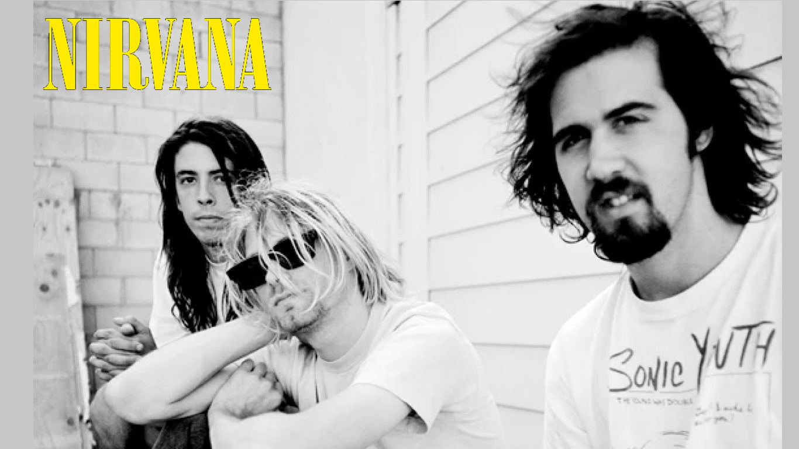

NIRVANA
Fue una banda de rock estadounidense formada en Aberdeen, Washington, en 1987. Fundada por el cantante y guitarrista Kurt Cobain y el bajista Krist Novoselic, la banda pasó por una sucesión de bateristas, sobre todo Chad Channing, y luego reclutó a Dave Grohl en 1990. El éxito de la banda popularizó el rock alternativo y, a menudo, se los mencionaba como la banda de la Generación X. Su música mantiene un seguimiento popular y continúa influyendo en la cultura del rock moderno. A fines de la década de 1980, Nirvana se estableció como parte de la escena grunge de Seattle y lanzó su primer álbum, Bleach, para el sello discográfico independiente Sub Pop en 1989. Desarrollaron un sonido que se basaba en contrastes dinámicos, a menudo entre versos tranquilos y coros pesados. Después de firmar con el sello discográfico DGC Records en 1991, Nirvana encontró un inesperado éxito comercial con Smells Like Teen Spirit, el primer sencillo de su histórico segundo álbum Nevermind (1991). Un fenómeno cultural de la década de 1990, Nevermind fue certificado Diamante por la RIAA.

Integrantes
- Kurt Cobain (Vocalista,Guitarra)
- Krist Novoselic (Bajo)
- Dave Grohl (Bateria)
- Pat Smith (Guitarra)
Canciones más exitosas
- Smells like teen spirit
- Polly
- Come as you are
- In Bloom
- lithium
- Something in the way